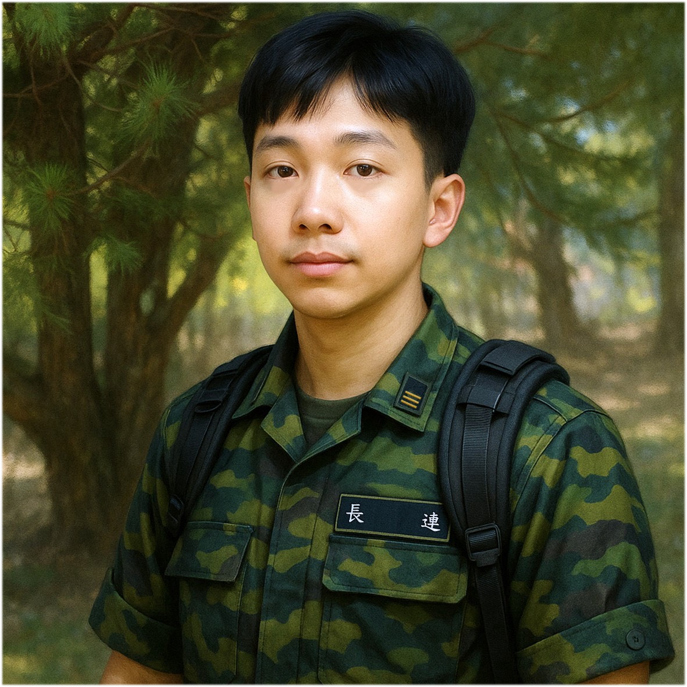

Illustration

Gender
♂️ - 男生
Goal
發表的論文與手牌中有五張綠色
Ability
# 小幸運 -
當你發表垃圾論文時，可以從牌庫中獲取一張與研究題目相同顏色的卡牌。
# 前途堪憂 -
當你已經發表兩篇垃圾論文，口試條件可以減少一篇論文發表。
## 穢土轉生 -
將一位已經肄業的研究生重新復學成為穢土轉生研究生，並且進行與你相同的研究題目，一起努力畢業。
Trivia
「小幸運」這段故事的起點，是某天珊珊姊突如其來地對湖口砲兵連連長說了一句話：
「連長，我真的覺得你好幸運喔！可以畢業」
話音剛落，坐在一旁的陳大帥帥立刻挺身而出、語氣嚴正地為連長平反：
「你怎麼這樣說連長？連長也是非常努力完成研究才能畢業的耶！」
現場氣氛瞬間微妙。
珊珊姊也似乎察覺話中可能帶有某種「失禮」的味道，立即改口附和陳大帥帥。
她想說的「幸運」究竟是指連長的能力、際遇，還是單純只是運氣爆棚？不得而知。
這難道是祝福？還是諷刺？
我們永遠無法確定，只能說 —
能得到珊珊姊這樣評價也算是一種…小幸運吧！
「前途堪憂」這個故事，再次源自一句天真無邪、卻殺傷力驚人的提問
某天，一位學弟正在協助學長拍攝實驗 data，過程中忽然皺著眉頭、語帶思索地問出一句靈魂拷問：
「學長，做電子紙的話好像還可以進元太，做眼動儀的話是不是…很慘啊？」
這位學弟表達了做眼動儀研究沒有保障就業的疑慮，可能也蘊含對於湖口砲兵連連長的職涯擔憂。
「穢土轉生」故事要從某年暑假訓練開始說起 —
當時新進碩零的五位研究生中，只有一人選擇投身於冷門卻神秘的研究領域：眼動儀。
沒想到第一學期結束時，劇情急轉直下 —
做眼動儀的人數驟增為三人，直接翻倍過半！
這場「眼動儀大復興」，或許與湖口砲兵連連長的個人魅力或神秘感染力有關，成功轉生兩位同志加入這條路。眼動儀一時間看似氣勢如虹，重返榮耀。
然而，教授一句話打破幻想：
「眼動儀只要留一位研究生就好，其餘的去做電子紙」
於是這場短暫的繁盛，轉瞬化為灰燼。那兩位新加入的研究生，無奈之下踏上「電子紙回歸之路」，像一場從未發生過的夢。
#SoC #Master #Year111